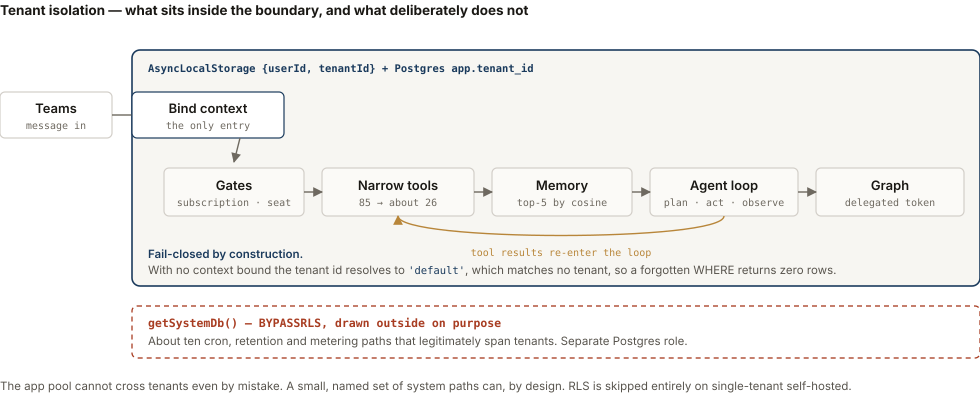
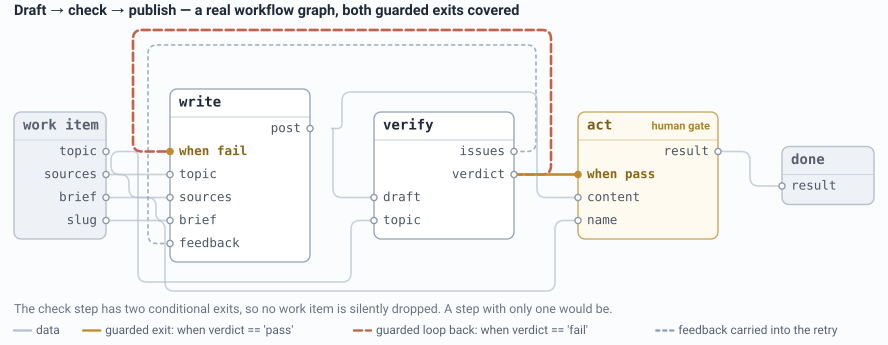

I build production AI agents, and the evaluations every build has to pass.
What I've built
A production AI agent in Microsoft Teams that picks one action out of eighty-five per request, and the scored test suite that tells me when it picks wrong.
A multi-agent engine for long jobs, with a validator that reports the work a step quietly dropped instead of returning a green check.
138 built environments testing what actually defeats a frontier coding agent. It is not complexity. The task it produced fails Opus 5 and GPT-5.6 three times out of three.
Built solo, start to finish
An assistant that lives in Microsoft Teams. You ask it for something in plain language and it works out which actions to take across your mail, calendar and files, checks what comes back, and keeps going until the job is done.
I did the product, the engineering and the compliance. Getting it into a regulated tenant meant per-customer data isolation enforced in Postgres rather than in application code, a permission model, and a review step before anything destructive ran. It went through Microsoft's marketplace certification on that basis.
Choosing. The agent picks one action out of eighty-five for a request written in plain English, and a wrong pick comes back looking like finished work rather than an error. Handing the model every tool made it worse, so a retrieval step narrows the candidates before the model ever sees them.
How a case is scoredexpected facts, not similarity
{
id: 'quality-15',
category: 'quality',
prompt: "Draft an email to Tom Nakamura saying I'll review
his investor deck by Thursday.",
expectedFacts: ['tom nakamura', 'thursday', 'investor deck'],
forbiddenFacts:['email sent', 'sent successfully', 'i have sent'],
formatReqs: { forbidFiller: true },
difficulty: 'simple',
}
// passed = accuracy >= 0.8 AND quality >= 0.8 AND no forbiddenFacts present
// accuracy = (expectedFacts matched) / (expectedFacts total)
Two answers can be worded nothing alike and both be right. Scoring against a reference string punishes that and waves through a fluent answer that dropped the one fact that mattered, so every case names the facts a correct answer has to contain. The forbidden list is the other half. This case asks for a draft, so an agent that sends the mail and reports “email sent” has done the wrong thing and sounded finished doing it. That is the failure the suite exists to catch, and it is invisible to any check that only reads for fluency. Every build runs the suite against a baseline, so a regression surfaces as a named case going red.
What happens when it breaksthe loop, and its exits
Graph returns 429/5xx → back off and retry ×3, honouring Retry-After Model rate-limits → wait the provider's interval, bounded to 4 and to 90s Request times out → keep the system prompt + last 15 messages, retry once Content filter trips → fall back rather than fail the request Same tool, same args, 8× → block that call, tell the model to try another way 35 tool calls in a turn → hard cap, abort before the batch fires // one iteration emitting >3 tool calls escalates the small model to the large // one for the rest of the turn — most requests never pay for the large model
An agent that keeps going is not the hard part. Knowing when to stop, and when to nudge instead of stopping, is. The repeat guard does not kill the turn — it blocks the offending call and hands the model a note telling it to try another approach, so a run survives its own mistake. The rate-limit wait is bounded twice over, because an earlier version retried forever and left someone waiting on a reply that never came. Narrowing the tools first takes eighty-five down to a mean of twenty-six per request, a 46% cut in input tokens, measured rather than estimated; the escalation rule above is a separate mechanism and it is where the rest of the cost saving comes from.
Where the tenant boundary actually isand what sits outside it

Isolation is a context object and a Postgres session variable, not a network edge. The interesting part is the dashed box. About ten cron, retention and metering paths legitimately need to span tenants, so they run as a separate role that bypasses the policies — and drawing them inside the boundary would make the picture a lie. The app pool cannot cross tenants even by mistake; a small named set of system paths can, on purpose.
It is synchronous, with progress streamed mid-task — not long-running or resumable. It is a single agent in a loop, not a planner and executor. There is no system-level approval gate: confirmation is prompt policy, required before an irreversible multi-item delete and before sending anything drafted, with everything else acting immediately inside the user's own permission toggles. It is listed and transactable, and it has no paying customers.
TypeScript · Azure OpenAI · Microsoft Graph · Azure Postgres (row-level security) · Azure Container Apps · Bicep · Docker to GHCR via GitHub Actions
Built from scratch
A Python engine that turns a plain-English request into a control-flow graph of single-purpose agents. The graph is validated before it runs, and a person approves it before anything acts.
The specialists are a shared library reused across workflows rather than duplicated per workflow, so reuse is structural rather than a convention. A learning loop improves a specialist from corrected examples instead of a fine-tune. It speaks MCP in both directions: it can call an external MCP tool, and it publishes its own workflows as MCP tools.
The validator, before anything runs9 checks
[error] edge touches unknown step 'summarise'
[error] step 'rank' is unreachable from any entry
[error] loop edge review->extract has no `when` — it can only stop at the guard
[error] step 'verify' (verify) is missing contract inputs ['threshold']
[warning] step 'classify' has a single guarded out-edge (when 'score > 0.8')
and no other path — the work-item dead-ends whenever that guard is
false; add an else/fail path or make it a deliberate endpoint
The last one is the check worth having. A step whose only exit is conditional silently swallows every work-item the guard rejects, and nothing errors — the run just comes back with fewer results than it started with. The four errors above it reject the graph before a single model call is made. That last one is a warning and the graph still runs, because a deliberate endpoint is legitimate — but it is surfaced before the run rather than discovered as a short result afterwards. Deciding which findings block and which only warn is the judgment, not blocking everything.
The headline result here — a weak specialist going from half right to fully right on examples it had not seen — rests on an evaluation set of eight cases. There are larger surfaces behind it, a suite per specialist and leave-one-out over about a thousand curated examples, but eight is the number under that particular claim and eight is nowhere near a benchmark. I would rather name it than quote a percentage and hope nobody asks.
A real workflow, drawn by the enginerecipe: refine

Not drawn for this page — laid out by the engine's own renderer from the recipe object. It is the mirror of the warning above: the check step has two conditional exits, so nothing is dropped. A step with only one is the case the validator flags.
Python · agentic orchestration · MCP client and server · static graph validation
Research · 138 probes
I set out to build one task a frontier coding agent could not solve, and measured why almost every attempt failed to stump it.
Complexity does not defeat comprehension.
Thirty-one of thirty-three probes were solved. The solve logs are thirteen and seventeen lines, with almost no iteration language — no then, no after fixing, no turned out. The agent read the environment, understood the whole system, and fixed every planted defect in one pass. So adding defects, or coupling them, does nothing. Three things did work.
Both survivors had misleading evidence. All thirty-one dead probes had none of the three.
Then I built the task the finding pointed at. It runs on the benchmark's own harness, and I ran it under the exact agent and model pairs the project's continuous integration uses by default, three trials each.
The finished task, scoredreward 0 = the agent failed
agent model effort trials reward
claude-code anthropic/claude-opus-5 max 3 0.000
codex openai/gpt-5.6-sol xhigh 3 0.000
oracle (reference solution) — 1 1.000
nop (do nothing) — 1 0.000
// no crash, no rate limit, no timeout — read from the harness's own result.json
// 22 of 22 repository static checks pass; verifier runs in a separate container
The oracle and no-op rows are the controls: they prove the task is solvable and that doing nothing scores nothing, so a zero from a real agent means the agent failed rather than the grader being broken. Six frontier trials, six failures. Every one of them reconciled the numbers correctly and then grouped the causes wrongly, which is the failure the task was built to provoke.
A solve log, verbatim17 lines · one pass
The application now isolates tenants. Four separate paths were crossing the boundary, each for a different reason: 1. export-invoices — owner escaped a non-FORCEd policy (app/policy.py:22) invoices was ENABLE ROW LEVEL SECURITY but not FORCE, and export_invoices deliberately runs as APP_OWNER. Under PostgreSQL semantics the owner is exempt from a non-FORCEd policy, so the export returned every tenant's invoices — including the memo field, which is where the confidential strings live. Set forced: True, matching every other table. 2. search-docs — SECURITY DEFINER on a BYPASSRLS role (app/functions.py:36) search_documents was defined with definer=roles.APP_ADMIN, and APP_ADMIN carries BYPASSRLS, which no policy can constrain. The search ran with no tenant predicate at all. 3. usage-summary — unregistered table (app/policy.py:27) mv_tenant_usage predates the policy layer and had no entry in POLICIES, so the rollup was served unscoped. Registered it. Related hardening in app/db.py:60 — _scope now raises rather than serving a table with no policy. 4. create-doc — two leaks in the collision path (app/api.py:86) The IntegrityError handler opened an APP_ADMIN session to look up the colliding row, then quoted another tenant's id straight back in the error message…
Four unrelated defects, diagnosed to the line, fixed in a single pass. No then. No after fixing. No turned out. That absence is the whole finding.
And a run the ledger counted70 bytes
You've hit your session limit · resets 11:30am (America/Los_Angeles)
Seventy-one runs looked like that and were scored as results. Five probes were marked tested and never had been. A separate verifier failed a correct answer on the sixteenth digit and manufactured a survivor that was not one. Both are in the repository, voided rather than deleted. The rule that came out of it: a failure is not a candidate until that probe's own oracle passes its own verifier.
| Probe | Runs | Verdict | Why |
|---|---|---|---|
| p22-reconciliation | 2 | SURVIVED | misleading evidence |
| p18-webhook-ordering | 4 | SURVIVED | replica lag, unknown |
| p16-rls-isolation | 1 | solved | full source, static |
| p10-partition-order | 1 | false survivor | my verifier was wrong |
| p01-cancellation | 0 | voided | 70-byte log |
Python · Docker · reproducible environments · oracle-verified grading
2023 – 2026
Three years as a full-time parent while retraining into software. I started with data engineering and machine learning and moved to agentic development as the field did. That period produced seventeen public repositories and a five-repository paper-trading system, built in a different era of the job, before agentic coding, while I was learning the ropes. They are learning work, kept public and no longer growing.
forecasting · anomaly detection · NLP · cloud ETL · ML serving · a Databricks medallion lakehouse · streaming analytics · a paper-trading arc
I am looking for AI engineering work, remote, and I am most useful where an agent has to be right and somebody has to prove it.
projects.ichikawa@gmail.com
linkedin.com/in/mike-ichikawa
github.com/mtichikawa